library(tidyverse)
library(sf)
library(mapsf) #Cartographie thématique
library(cartography) #Cartographie thématique
library(spdep) # pour calculer l'auto-corrélation spatiale
library(geoR) # pour calculer le semi-variogramme empirique
library(spatstat) # pour produire des surfaces lissées
library(terra) # pour le traitement de données matricielles (raster)
library(FactoMineR)DVFRM
Analyse des données DVF à l’echelle locale
Ce notebook (fait avec Quarto) présente une chaîne de traitements dédiée à la préparation des données DVF en open data formalisée dans l’environnement R et documentée dans un souci de reproductibilité.
Il se concentre sur l’exploration et l’analyse des données DVF disponibles en opendata à l’échelle de Rennes Métropole. Il propose d’explorer les dynamiques du marché immobilier résidentiel (volume, type, prix, évolution…).

Chargement des packages
Intégration des données
DVF <- read.csv("C:/Users/mericskay_b/Dropbox/Atlas Rennes/DVFRM/SourceDVF/merged.csv")Préparation des données DVF
Nettoyage des données et supression des mutations multiventes
etape1 <- DVF %>% filter(nature_mutation == "Vente")
etape1bis <- etape1 %>% filter(type_local == "Maison" | type_local == "Appartement")
etape2 <- etape1bis %>% select(id = id_mutation, disposition = numero_disposition, parcelle= id_parcelle, date = date_mutation, nature = nature_mutation, codecommune = code_commune, departement = code_departement, type = type_local, surface = surface_reelle_bati, piece = nombre_pieces_principales, prix = valeur_fonciere, latitude, longitude)
etape2[etape2==""] <- NA
etape3 <- etape2 %>% na.omit()
unique <- etape3 %>% distinct(id, prix, surface)
nbunique <- unique %>% group_by(id) %>% summarise(nb = n())
etape4 <- nbunique %>% filter(nb==1)
merge <- merge(etape4,etape3, by="id")
etape5 <- merge %>% distinct(id, .keep_all = TRUE) %>% select(id, date, type, nature, codecommune, prix, surface, piece, latitude, longitude)
etape5$prix <- as.numeric(etape5$prix)
etape5$surface <- as.numeric(etape5$surface)
etape5$piece <- as.numeric(etape5$piece)Supression des valeurs aberrantes
quantile(etape5$prix, 0.01) 1%
20000 options(scipen=999)
summary(etape5$prix) Min. 1st Qu. Median Mean 3rd Qu. Max.
1 112235 168590 201755 246000 22200000 hist(etape5$prix, breaks = 50000, xlim = c(15000,1000000))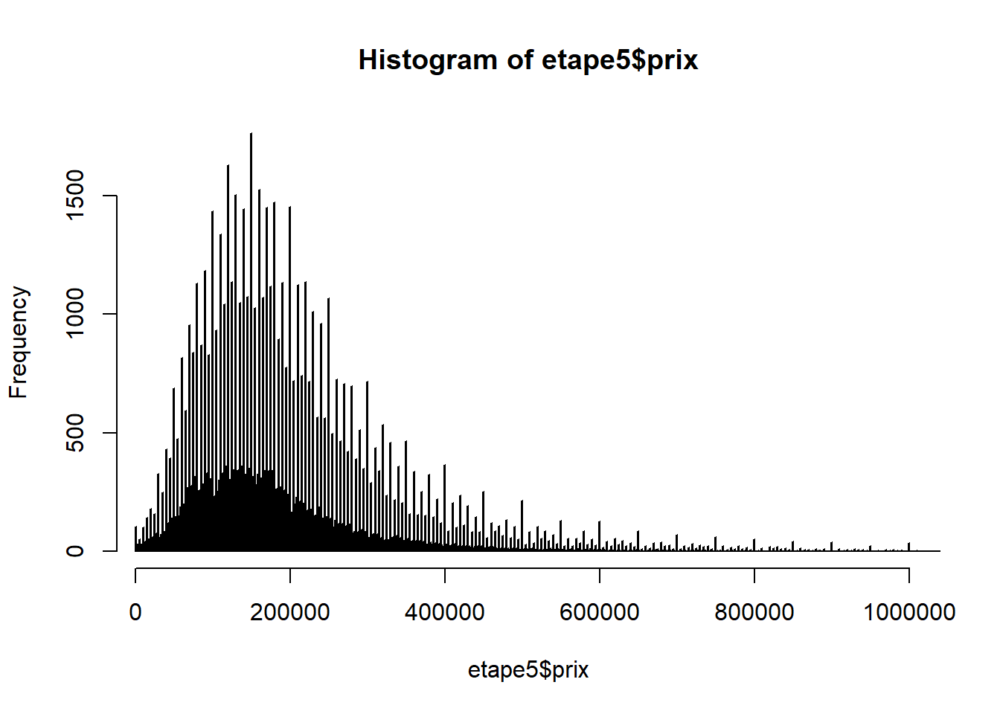
Maisons <- etape5 %>% filter(type == 'Maison')
Appartement <- etape5 %>% filter (type == 'Appartement')
hist(Maisons$surface, nclass = 500, xlim = c(0,600))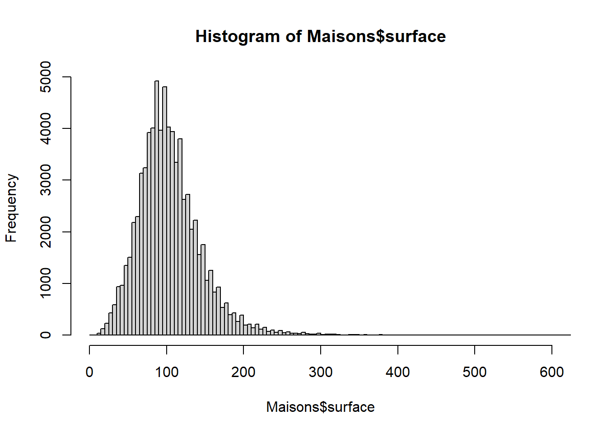
hist(Appartement$surface, nclass = 500, xlim = c(0,300))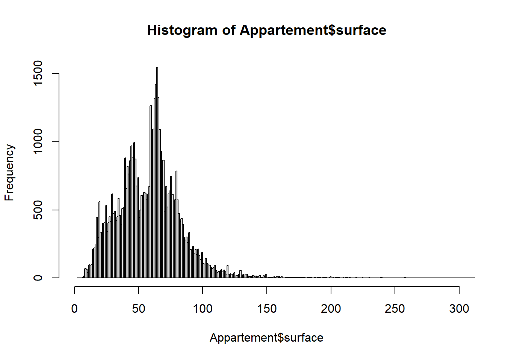
etape6 <- etape5 %>% filter(between(prix, 15000, 5000000)) %>%
filter(case_when(type=='Appartement' ~ between(surface, 10, 200)) |
case_when(type=='Maison' ~ between(surface, 10, 300)))
etape7 <- etape6 %>% mutate(prixm2 = prix/surface)
quantile(etape7$prixm2, 0.01) 1%
443.8872 hist(etape7$prixm2, breaks = 1000, xlim = c(0,10000))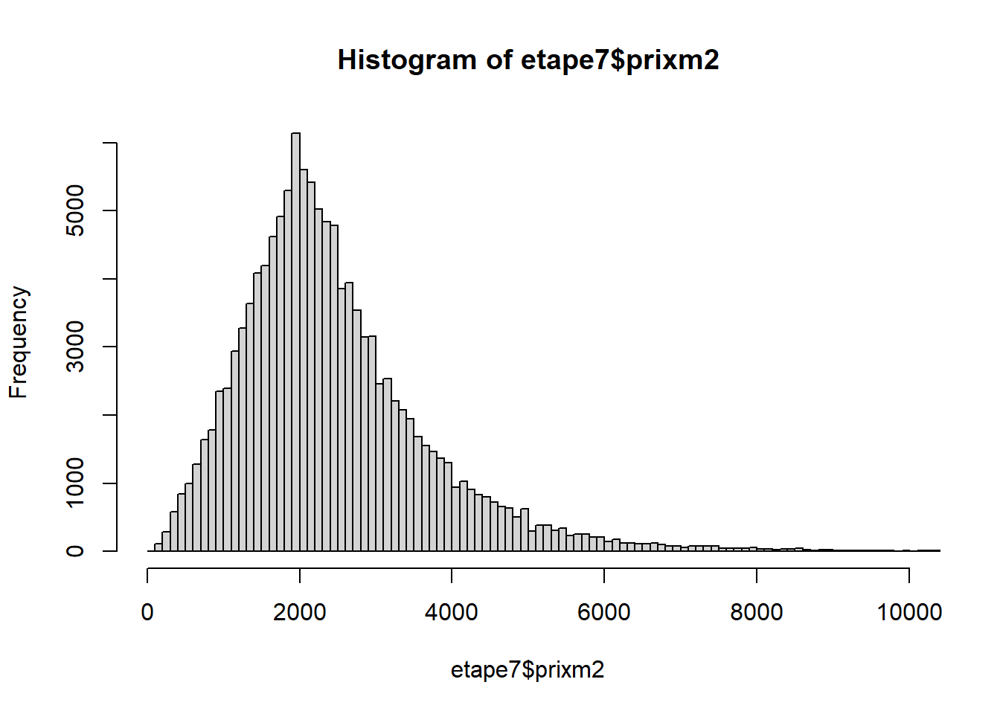
etape8 <- etape7 %>% filter(between(prixm2,400,8000))
etape8$date <- as.character(etape8$date)
etape8 <- etape8 %>% mutate(annee = substr(etape8$date, 1, 4))
etape8$annee <- as.numeric(etape8$annee)
etape8$prix <- round(etape8$prix)
etape8$prixm2 <- round(etape8$prixm2)Enrichissement des données
COG <- read.csv("C:/Users/mericskay_b/Dropbox/Atlas Rennes/DVFRM/data/COG.csv", sep=",", encoding="UTF-8", stringsAsFactors=FALSE)
COG <- COG %>% mutate(codecommune = CODGEO)
etape9 <- merge(etape8, COG, "codecommune")
DVFOK <- etape9Ne garder que le dataframe nécessaire
rm(list=setdiff(ls(), c("DVFOK")))Selection de l’EPCI etudié
DVF <- DVFOK %>% filter(LIBEPCI == 'Rennes Métropole')Ecriture du fichier des mutations DVF de Rennes Métropole
write.csv(DVFOK, "C:/Users/mericskay_b/desktop/DVFRM.csv")Analyses exploratoires
DVF <- read.csv("C:/Users/mericskay_b/Desktop/R/DVF/DVFRM.csv")Indicateurs génériques
Tableau récapitulatif
RecapRM <- DVF %>% group_by(type) %>%
summarise(tot = n (), prixmed = median(prix), prixmoy = mean(prix), surfmed = median(surface), surfmoy = mean(surface), prixm2med = median(prixm2), prixm2moy = mean(prixm2))
RecapRM <- RecapRM %>% mutate(part = (tot/sum(tot)*100))
print(RecapRM)# A tibble: 2 × 9
type tot prixmed prixmoy surfmed surfmoy prixm2med prixm2moy part
<chr> <int> <int> <dbl> <int> <dbl> <int> <dbl> <dbl>
1 Appartement 36655 145000 163681. 62 59.5 2671 2857. 65.7
2 Maison 19175 280000 313257. 105 111. 2628 2885. 34.3Analyse par année
DVFRMdf <- as.data.frame(DVF)
anneeRM <- DVFRMdf %>% group_by(annee, LIBGEO) %>% summarise(nb= n(), prix = mean(prix), prixm2 = mean(prixm2))`summarise()` has grouped output by 'annee'. You can override using the
`.groups` argument.Evolution des volumes de vente par année
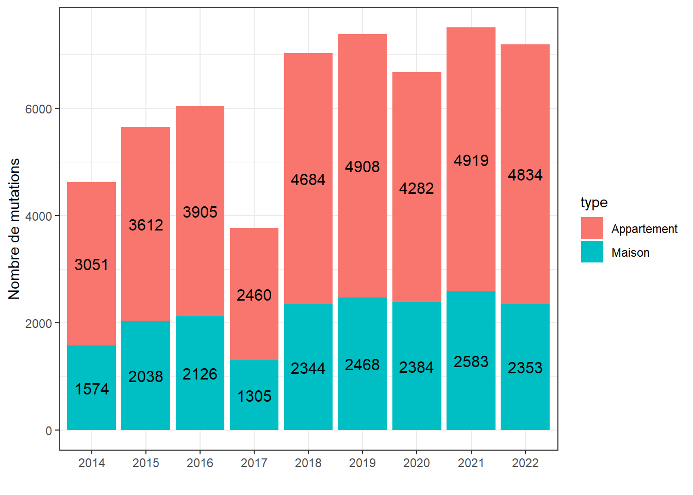
Distribution des prix de vente en fonction du type de mutation
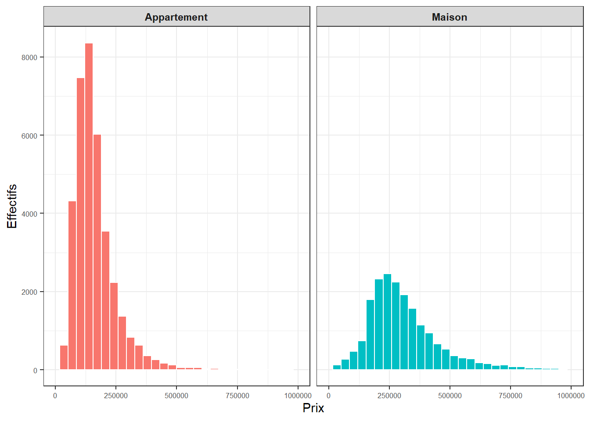
Distribution des prix de vente au m2 en fonction du type de mutation
ggplot(DVF, aes(x = prixm2, fill = type)) +
theme_bw() +
theme(axis.text = element_text(size = 6)) +
theme(strip.text = element_text(face = "bold")) +
geom_histogram(position = "identity", color = "white") +
xlab("Prix au m²") + ylab("Effectifs") +
facet_wrap(~type) +
guides(fill = FALSE)`stat_bin()` using `bins = 30`. Pick better value with `binwidth`.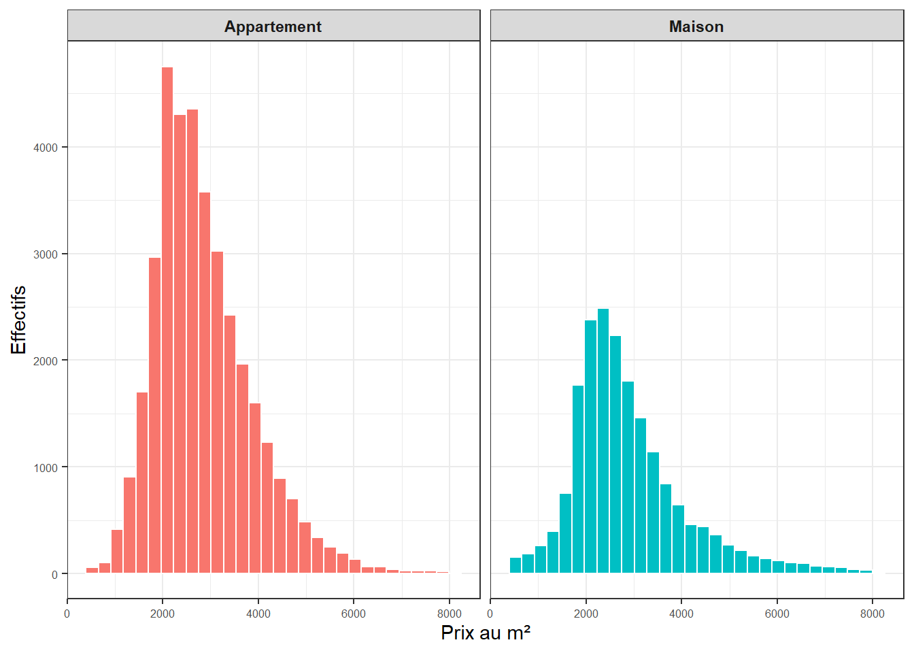
Distribution des surface en fonction du type de mutation
ggplot(DVF, aes(x = surface, fill = type)) +
theme_bw() +
theme(axis.text = element_text(size = 6)) +
theme(strip.text = element_text(face = "bold")) +
geom_histogram(position = "identity", color = "white") +
xlab("Prix au m²") + ylab("Effectifs") +
facet_wrap(~type) +
guides(fill = FALSE)`stat_bin()` using `bins = 30`. Pick better value with `binwidth`.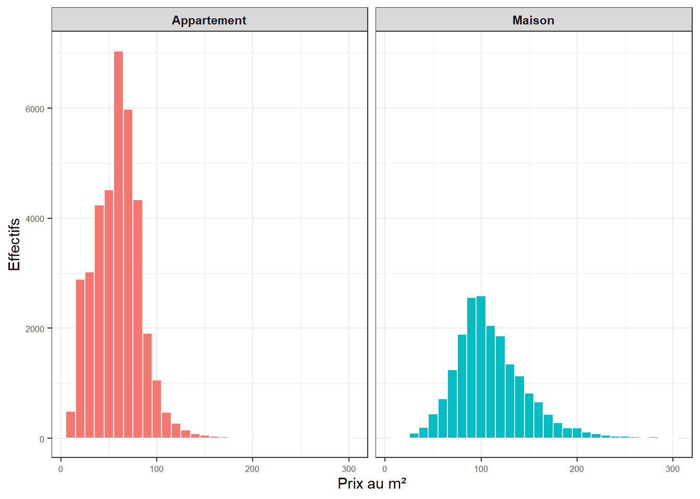
Boxplot des prix selon la commune et le type de bien
ggplot(DVF, aes(x = LIBGEO, y = prixm2, fill = type)) +
geom_boxplot() +
theme(axis.text.x = element_text(angle = 90, hjust = 1)) +
theme(legend.position = "none") +
labs(y = "Prix") +
facet_wrap(~type) +
theme(plot.title = element_text(hjust = 0.5),
axis.title.y = element_text(face = "bold"),
legend.title = element_text(face = "bold"),
legend.text = element_text(face = "italic"))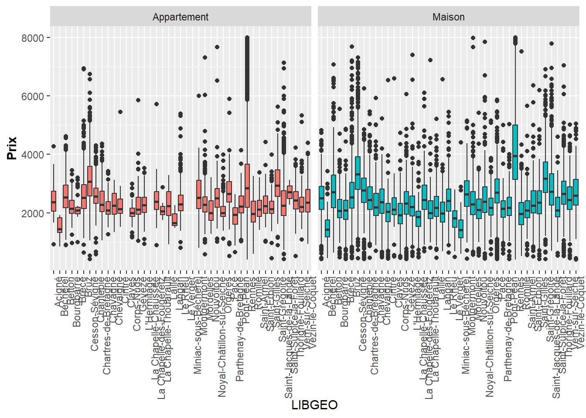
Evolution des prix de vente par année
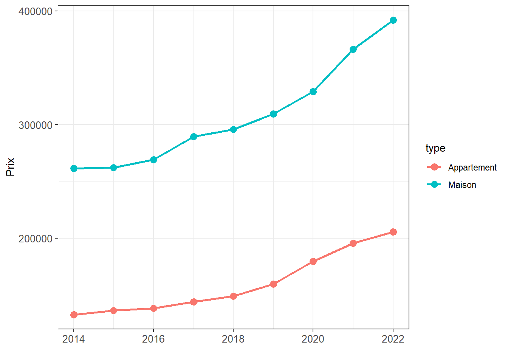
Evolution des prix de vente au m2 par année
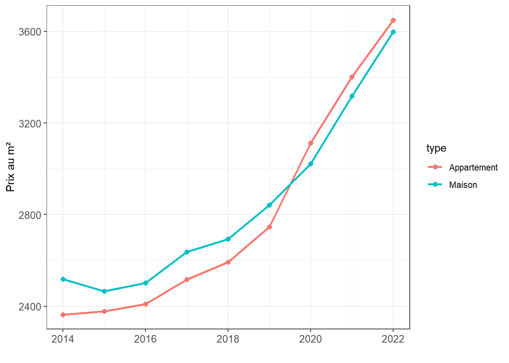
Analyse spatiale
Agrégations spatiales
L’exploration spatiale des données DVF peut être envisagée selon différents référentiels d’analyse (communes, IRIS, sections cadastrales, maillage, etc.). Nous avons fait le choix de travailler sur deux découpages du territoire métropolitain, l’un d’origine statistique, l’autre fiscale.
D’un côté les IRIS au nombre de 172, correspondent à un échelon pivot qui permet de croiser les données DVF avec d’autres variables de l’Insee notamment (revenu, âge, CSP, etc.).
De l’autre, les sections cadastrales, au nombre de 835, constituent un autre échelon d’analyse pertinent car ce découpage possède un lien direct avec l’objet d’étude (les dynamiques immobilières).
Spatialisation des mutations
DVFgeo<- st_as_sf(DVF, coords=c("longitude","latitude"), crs=4326)
plot(st_geometry(DVFgeo), pch = 3, cex = 0.1)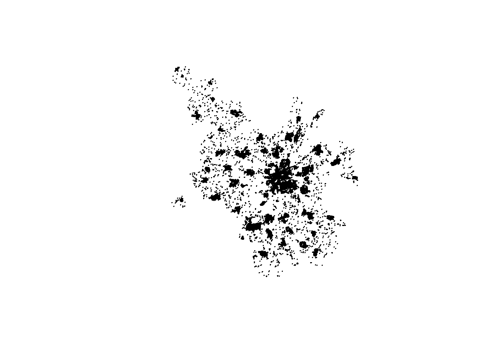
DVFgeo<- st_transform(DVFgeo, 2154)Ecrire le GPKG pour un usage dans un logiciel SIG
#st_write(DVFgeo, "DVFgeoRM.gpkg", append = FALSE)Chargement des couches d’analyse (agrégation)
Reading layer `IRISBZH' from data source
`C:\Users\mericskay_b\Dropbox\Atlas Rennes\DVFRM\data\IRISBZH.geojson'
using driver `GeoJSON'
Simple feature collection with 1742 features and 31 fields
Geometry type: MULTIPOLYGON
Dimension: XY
Bounding box: xmin: -5.141277 ymin: 47.27789 xmax: -1.015613 ymax: 48.90097
Geodetic CRS: WGS 84Reading layer `Communes' from data source
`C:\Users\mericskay_b\Dropbox\Atlas Rennes\DVFRM\data\Communes.shp'
using driver `ESRI Shapefile'
Simple feature collection with 1208 features and 12 fields
Geometry type: MULTIPOLYGON
Dimension: XY
Bounding box: xmin: 99040 ymin: 6704161 xmax: 400665.5 ymax: 6886001
Projected CRS: RGF93 v1 / Lambert-93Reading layer `Sectionscadastrales' from data source
`C:\Users\mericskay_b\Dropbox\Atlas Rennes\DVFRM\data\Sectionscadastrales.shp'
using driver `ESRI Shapefile'
Simple feature collection with 835 features and 6 fields
Geometry type: MULTIPOLYGON
Dimension: XY
Bounding box: xmin: 330653.1 ymin: 6769731 xmax: 367908.1 ymax: 6812018
Projected CRS: RGF93 v1 / Lambert-93Choix de la couche des communes
Communes <- Communes %>% filter(CODE_EPCI==243500139)
IRIS <- IRIS %>% filter(epci_code==243500139)Agrégations spatiales par IRIS
# Calcul d'indicateurs par IRIS
IRISDVF <- IRIS %>% st_join(DVFgeo) %>% group_by(iris_code) %>% summarise(Prixm2 = mean(prixm2), Prix = mean(prix), Surface = mean(surface))
# Calcul du nombre de mutations par IRIS
IRISDVF <- IRISDVF %>% mutate(Nbmutations = lengths(st_intersects(IRISDVF, DVFgeo)))
IRISDVF <- IRISDVF %>% na.omit() # pour supprimer les valeurs manquantes
Maisons <- DVFgeo %>% filter(type == 'Maison')
Appartements <- DVFgeo %>% filter(type == "Appartement")
IRISDVF <- IRISDVF %>% mutate(NbMaisons = lengths(st_intersects(IRISDVF, Maisons))) %>% mutate(NbAppart = lengths(st_intersects(IRISDVF, Appartements)))Agrégations spatiales par section cadastrale
# Calcul du prix moyen au m² par section cadastrale
Sections$id <- as.character(Sections$id)
Sections <- Sections %>% mutate(codesection = id)
SectionsDVF <- Sections %>% st_join(DVFgeo) %>% group_by(codesection) %>% summarise(Prixm2 = mean(prixm2), Prix = mean(prix))
SectionsDVF <- SectionsDVF %>% na.omit() # pour supprimer les valeurs manquantes
# Calcul du nombre de mutations par section
SectionsDVF <- SectionsDVF %>% mutate(Nbmutations = lengths(st_intersects(SectionsDVF, DVFgeo)))
SectionsDVF <- SectionsDVF %>% mutate(NbMaisons = lengths(st_intersects(SectionsDVF, Maisons))) %>% mutate(NbAppart = lengths(st_intersects(SectionsDVF, Appartements)))Ecriture des gpkg pour un usage dans un SIG
#st_write(SectionsDVF, "SectionsDVF.gpkg", append = FALSE)
#st_write(IRISDVF, "IRISDVF.gpkg", append = FALSE)Cartographie thématique
Cartographie à l’échelle des IRIS
Nombre de mutations par IRIS
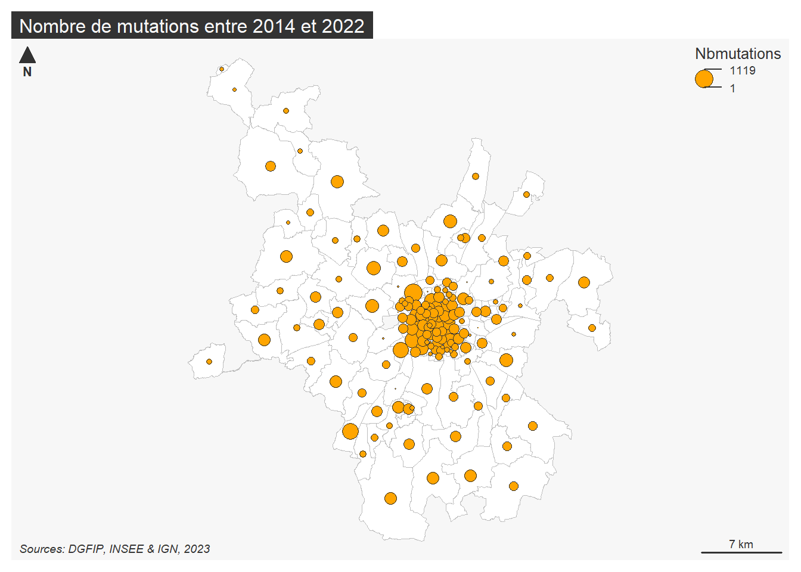
Nombre de mutations d’appartements par IRIS
Nombre de mutations de maisons par IRIS
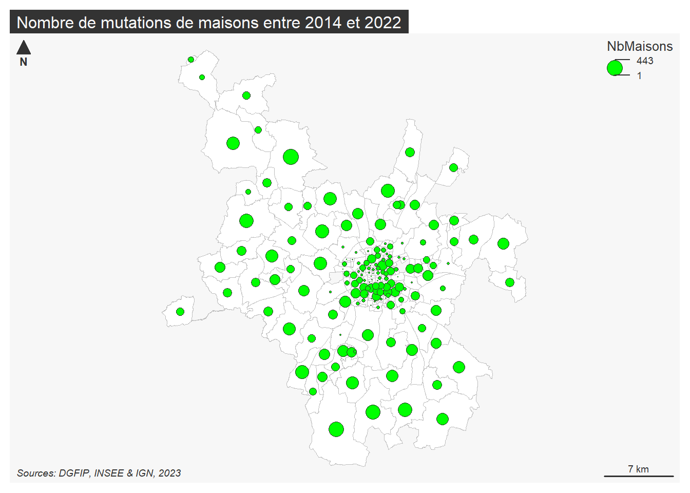
Prix moyens par IRIS
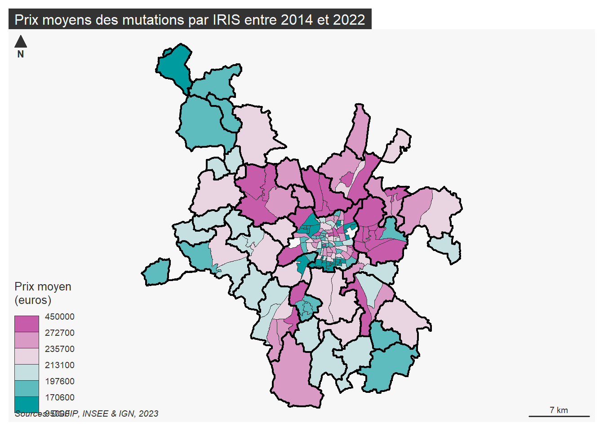
Prix moyen au m2 par IRIS
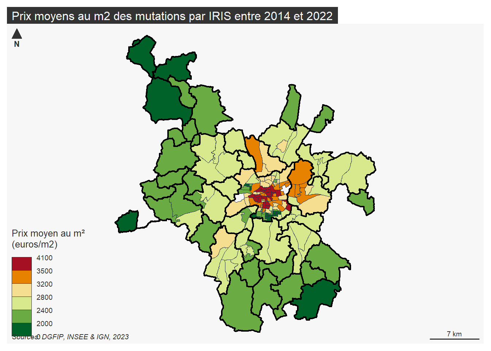
Cartographie à l’échelle des sections cadastrales
Nombre de mutations par sections

Nombre de mutations d’appartements par sections
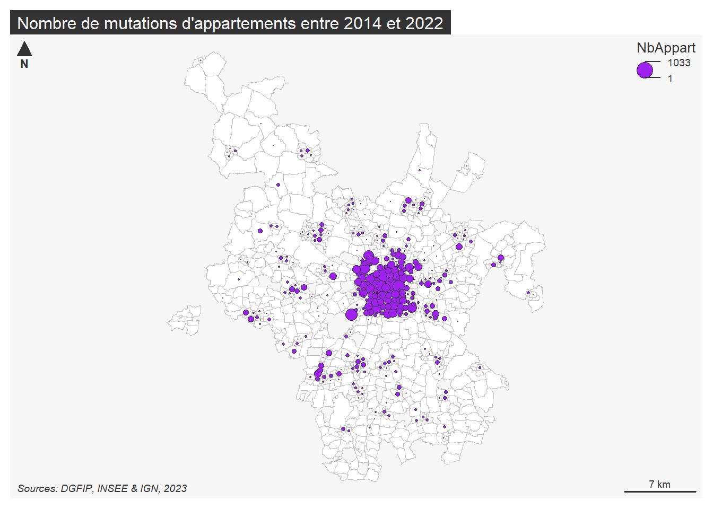
Nombre de mutations de maisons par IRIS
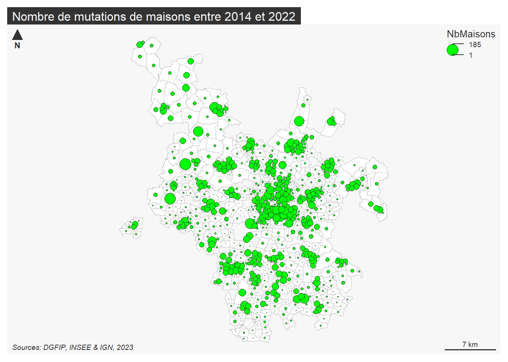
Prix moyens par section cadastrale
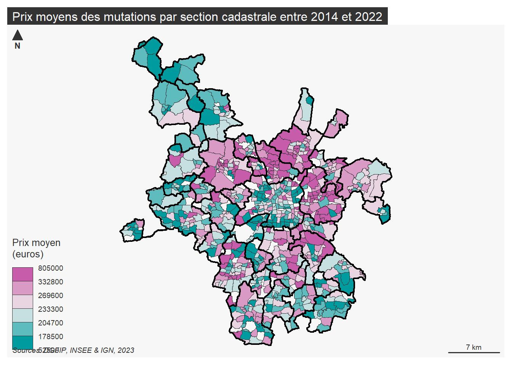
Prix moyen au m2 par section cadastrale
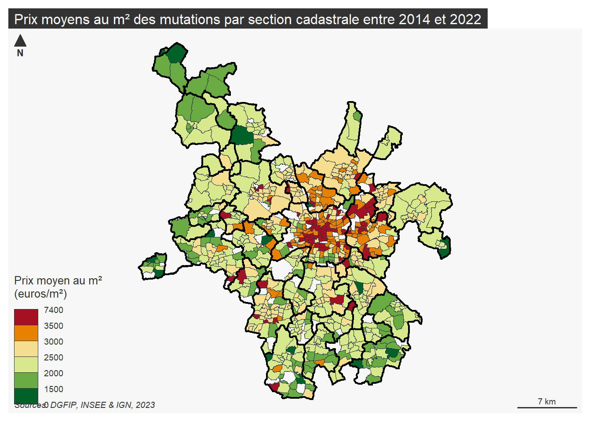
Histogramme de distribution
my_breaks <- hist(SectionsDVF$Prixm2,breaks=100, plot=FALSE)$breaks
my_colors <- rep("#006228", length(my_breaks))
my_colors[my_breaks > 1500 & my_breaks <= 2000] <- "#6AAB44"
my_colors[my_breaks > 2000 & my_breaks <= 2500] <- "#D7E88D"
my_colors[my_breaks > 2500 & my_breaks <= 3000] <- "#F6DE90"
my_colors[my_breaks > 3000 & my_breaks <= 3500] <- "#E78200"
my_colors[my_breaks > 3500] <- "#A51122"
hist(SectionsDVF$Prixm2,
breaks = my_breaks,
main = "",
xlab = "Prix moyen au m2",
col = my_colors)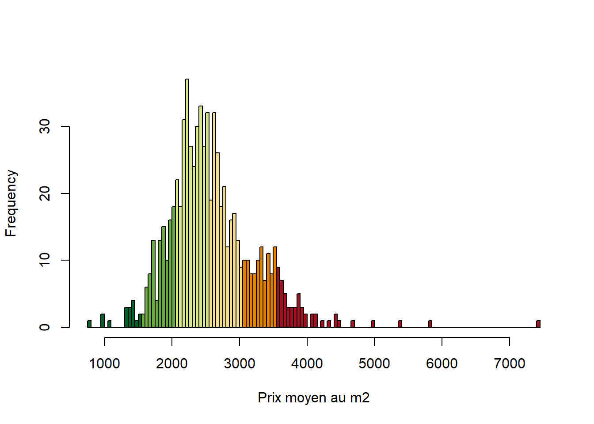
Lissage spatial des mutations
Lissage spatial de toutes les mutations de la période
DVFgeolissage <- DVFgeo Calcul des indicateurs pour paramétrer le lissage
# Calcul sur les plus proches voisins
listPPV <- knearneigh(DVFgeolissage, k = 1) # pour connaître le plus proche voisin de chaque mutationWarning in knearneigh(DVFgeolissage, k = 1): knearneigh: identical points foundWarning in knearneigh(DVFgeolissage, k = 1): knearneigh: kd_tree not available
for identical pointsPPV <- knn2nb(listPPV, row.names = DVFgeolissage$id) # pour convertir l'objet knn en objet nb
distPPV <- nbdists(PPV, DVFgeolissage) # pour connaître la distance entre plus proches voisins
print(as.data.frame(t(as.matrix(summary(unlist(distPPV)))))) Min. 1st Qu. Median Mean 3rd Qu. Max.
1 0 0 0 13.64749 11.23015 1026.584hist(unlist(distPPV), nclass = 200,
main = "Distance au plus proche voisin",
col = "black", border = "white", xlab = "Distance", ylab = "Fréquence", xlim = c(0,150))
#calcul du test de Moran
moran.test(DVFgeolissage$prixm2, listw = nb2listw(PPV))
Moran I test under randomisation
data: DVFgeolissage$prixm2
weights: nb2listw(PPV)
Moran I statistic standard deviate = 101.17, p-value <
0.00000000000000022
alternative hypothesis: greater
sample estimates:
Moran I statistic Expectation Variance
0.50668952554 -0.00001791184 0.00002508380 Cartographie du lissage spatial sur toute la période
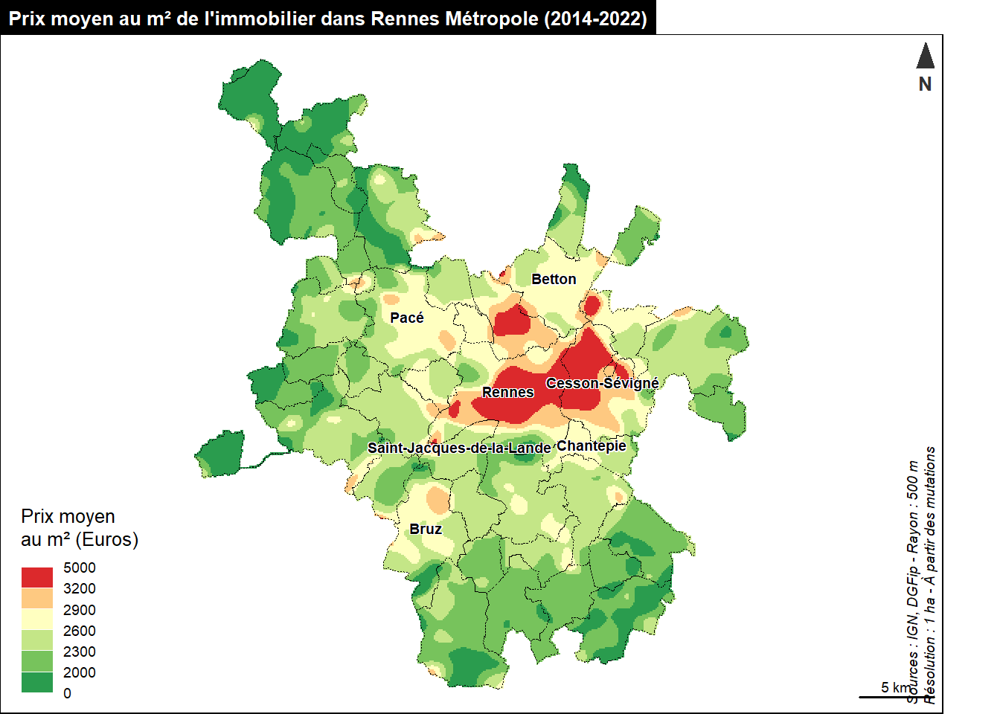
Lissage spatial par année
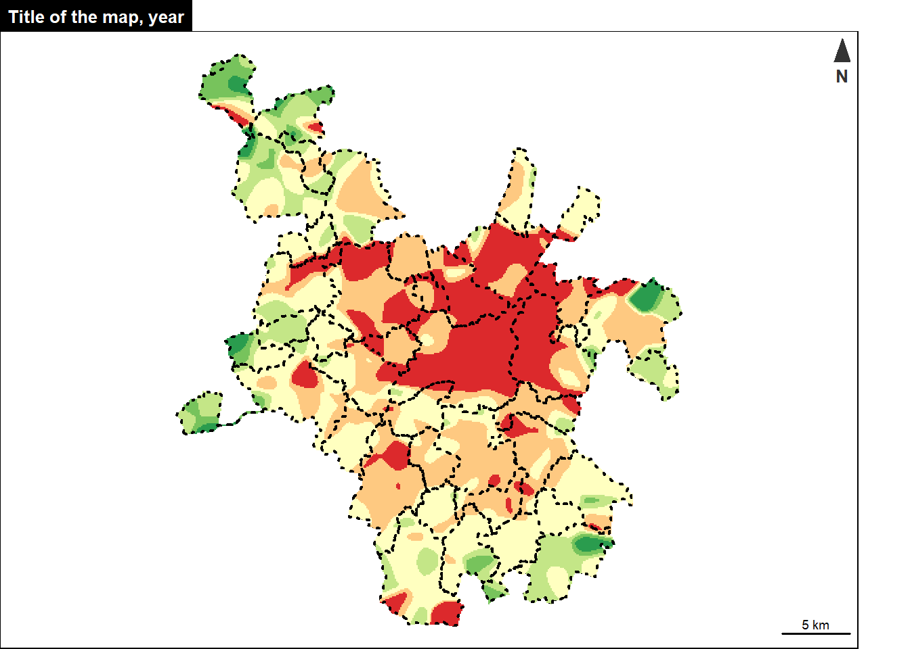
Série de cartes lissées des prix au m² des appartements de Rennes
Configuration du lissage des prix au m² des appartements de Rennes
Cartographie du lissage des prix au m² des appartements de Rennes
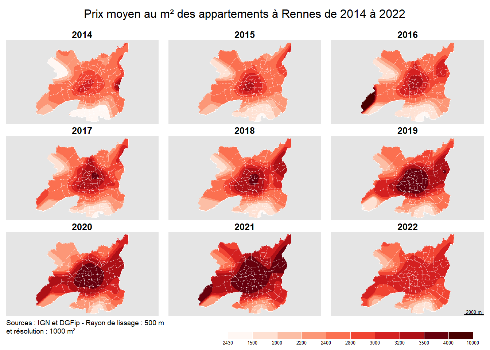
Classification statistique des sous marchés
Préparation du jeu de données
IRISDVF <- IRISDVF %>% mutate(propmaison = (NbMaisons / Nbmutations *100),
propappart = (NbAppart / Nbmutations *100))
DVFRMCAH <- as.data.frame(IRISDVF)
DVFRMCAH <- DVFRMCAH %>% na.omit()
CAHdf <- DVFRMCAH %>% select(Nbmutations, Prix, Prixm2, Surface, propmaison, propappart)Variables centrées-réduites
CAH <- scale(CAHdf)Réalisez l’ACP
pca_result <- PCA(CAH, graph = TRUE)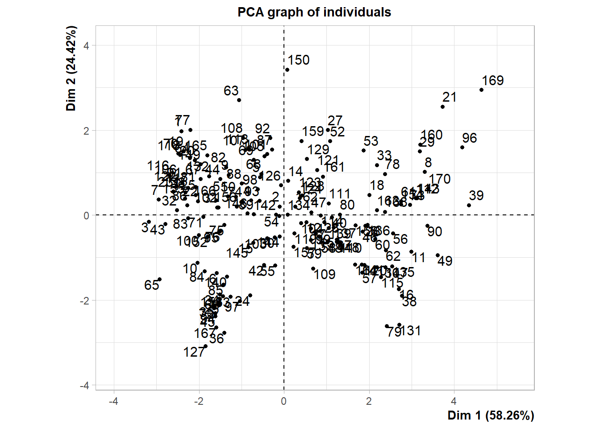
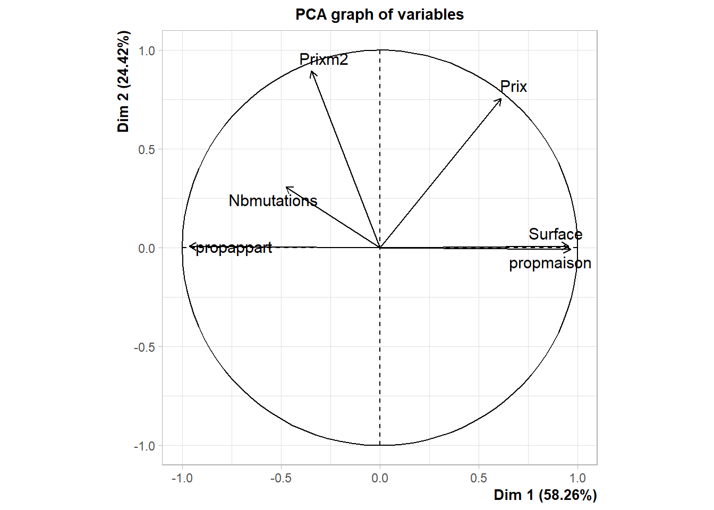
Réalisez une CAH sur les composantes principales (CP)
cah_result <- hclust(dist(CAH))
clusters <- cutree(cah_result, k = 6)
DVFRMCAH$Cluster <- clusters Afficher le dendrogramme (le résultat de la CAH)
#fviz_dend(cah_result, k_col = 5) # k_col spécifie le nombre de groupesTableau reapitulatif des groupes
RecapCAHIRIS <- DVFRMCAH %>% group_by(Cluster) %>% summarise(NbIRIS= n(), NbMutationsmoyen = mean(Nbmutations), Prixmoyen = mean(Prix), Prixm2moyen = mean(Prixm2), Surfacemoyenne = mean(Surface), PropMaison = mean(propmaison), PropAppart= mean(propappart))
print(RecapCAHIRIS)# A tibble: 6 × 8
Cluster NbIRIS NbMutationsmoyen Prixmoyen Prixm2moyen Surfacemoyenne
<int> <int> <dbl> <dbl> <dbl> <dbl>
1 1 37 538 194160. 3284. 60.2
2 2 49 360. 222590. 2464. 91.6
3 3 26 366. 259554. 3343. 76.7
4 4 29 187. 153990. 2323. 68.0
5 5 6 102. 376859. 3144. 123.
6 6 23 120. 250797. 2409. 106.
# ℹ 2 more variables: PropMaison <dbl>, PropAppart <dbl>Graphique de variations à la moyenne
# Création des moyennes du groupe
RecapCAHIRIS <- RecapCAHIRIS %>% mutate(Moy_Prix = mean(IRISDVF$Prix),
Moy_Prixm2 = mean(IRISDVF$Prixm2),
Moy_PropMaisons = mean(IRISDVF$propmaison),
Moy_PropApparts = mean(IRISDVF$propappart),
Moy_Surface = mean(IRISDVF$Surface)
)
# Calcul des différences à la moyenn
SyntheseCAHEPCI <- RecapCAHIRIS %>%
mutate(Prix=(Prixmoyen- Moy_Prix)/Moy_Prix*100,
Prixm2=(Prixm2moyen- Moy_Prixm2)/Moy_Prixm2*100,
PropMaison=(PropMaison-Moy_PropMaisons)/Moy_PropMaisons*100, PropAppart=(PropAppart-Moy_PropApparts)/Moy_PropApparts*100, Surface=(Surfacemoyenne-Moy_Surface)/Moy_Surface*100)
SyntheseCAHEPCI <- SyntheseCAHEPCI %>% select(Cluster, Prix, Prixm2, PropMaison, PropAppart, Surface)
gather <- SyntheseCAHEPCI %>% gather(key=variable, value= "value", Prix:Surface)
gather$Cluster <- as.character(gather$Cluster)
ggplot(gather, aes(x=variable, y=value, fill=Cluster)) +
geom_bar(stat = "identity") + coord_flip() +
scale_fill_manual(values=c("#ff851b","#39a699","#FF4136","#f9c155","#1f78b4","#2cb1e3")) +
ylab("Variation a la moyenne (%)") +
theme_bw() +
theme(legend.position = "none") +
facet_wrap(~Cluster, ncol = 1)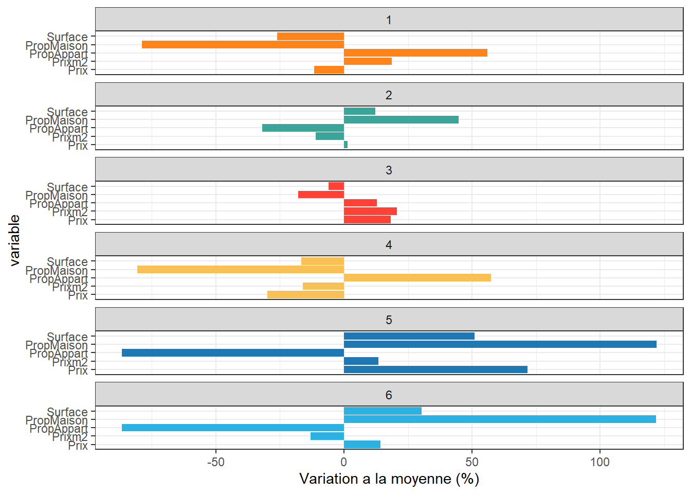
Cartographie de la CAH
IRISDVFCAH <- left_join(IRIS, DVFRMCAH, by = "iris_code")
par(mar = c(0, 0, 1.2, 2))
mf_theme("default")
mf_map( x = IRISDVFCAH, var = "Cluster", type = "typo",
pal = c("#FF4136","#f9c155","#416979","#39a699","#FF851B","#2cb1e3"),
val_order = c("6","3", "4", "2", "5", "1" ),
border = "white", lwd = 0.2, leg_pos = "topright",
leg_title = "Typologie \n des sous-marchés")
mf_label(x = Communes[Communes$POPULATION >10000, ], var = "NOM_COM", cex = 0.6, halo = TRUE, r = 0.1)
mf_layout( title = "Sous-marchés de l'immobilier résidentiel", credits = paste0( "Sources: DGFIP-IGN, 2023" ) )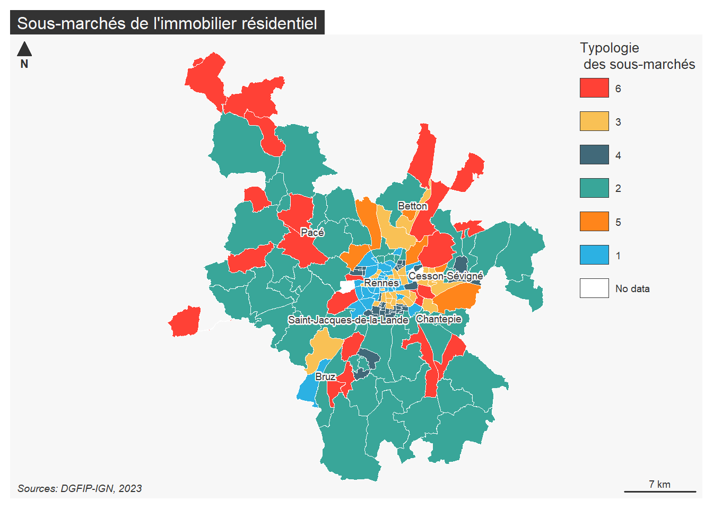